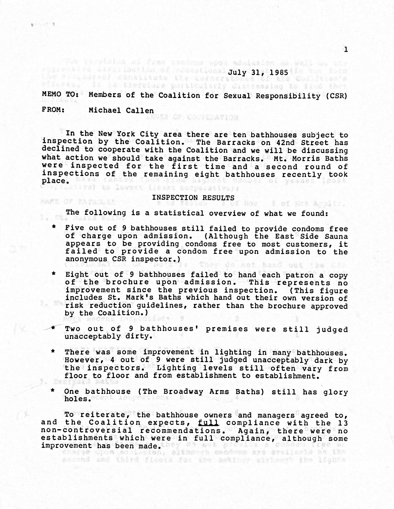

AIDS and Public Sex: Debates on Sex Establishments
What is AIDS?
AIDS (Acquired Immuno Deficiency Syndrome) is the last stage of HIV (Human Immunodeficiency Virus) infection that occurs when the body’s immune system is badly damaged because of the HIV virus. HIV is a virus that attacks cells that help the body fight infection, making a person more vulnerable to other infections and diseases.1 HIV/AIDS is spread through specific bodily fluids like semen and blood. It is now most often spread during unprotected sex and through sharing needles.
AIDS was connected upon its discovery to gay men. Still, it is essential to mention that it is not only a disease that has and does affect homosexual men. IV drug users, Haitians, hemophiliacs, blood transfusion recipients, and children of HIV-positive women were all populations alongside gay men who sought treatment, research, and services for their health problems. However, since this project’s scope is gay men and their establishments, this page will focus primarily on AIDS issues that affect gay men.
When was AIDS first “discovered” in America?
AIDS was first “discovered” in America in 1981. However, we have evidence that shows AIDS/HIV has been in the United States since the late 1970s.2 AIDS is believed to have come from Africa, where it has been in existence for decades in remote areas. The people there called it the wasting disease. One of the first known Western cases was Grethe Rask, a Danish doctor who worked in Zaire, Africa, during the 1970s. By 1976, she was very ill in Africa, and by November 1977, she was forced to fly back to Denmark, where she died of Pneumocystis carinii (a type of pneumonia that typically was not deadly) on December 12, 1977.3
In the US, some of the earliest cases within the homosexual population can be traced back to 1979. According to Randy Shilts, IV drug addicts around the same time began documenting cases of what they called “junkies pneumonia.” It was first officially written about in an MMWR report in June of 1981 titled “Pneumocystis pneumonia in homosexual men— Los Angeles,” which reported on five cases of the illness in the LA area. It was then followed by “Kaposi’s Sarcoma and Pneumocystis Pneumonia Among Homosexual Men – New York and California” in July of the same year. However, in these early reports, the focus is on the strange illnesses these young gay men were succumbing to, as AIDS itself was unknown at the time. The only thing doctors did understand was that the immune systems of these men were almost nonexistent. Diseases like Kaposi’s Sarcoma, Pneumocystis carinii pneumonia, cytomegalovirus, and toxoplasmosis were therefore considered opportunistic infections that were the cause of death but not the underlying issue behind these men’s health problems. It was not until the mid-1980s that the HIV virus was identified as the cause of AIDS.4
How did the queer community react to it in the early days?
In the early days of the AIDS epidemic, the queer community was divided in its reaction. For those already infected or who knew of other infected friends and lovers, the early period from 1980 until 1983 or so was one of great fear and loss but also one of activism and action to create support networks, hotlines, research funds, and safe sex education that would hopefully slow down transmission. These early activists in New York City include names like Larry Kramer, a gay playwright who founded the GMHC (Gay Mens Health Crisis) and ACT UP during AIDS, Michael Callen and Richard Berkowitz, who were some of the earliest pioneers of gay safer sex education along with Callen being the face of PWA (People With AIDS) and founding his self-help group called PWAS, and other early GMHC members like Paul Popham who was their first President.
However, in these early years, the vast majority of the gay population of New York City was a mix of unaware or in denial about the seriousness of AIDS due to mixed press coverage, lack of government intervention, and the feeling of gay liberation and being young and invisible. These men took longer to convince that AIDS was a big deal. Still, through organizations like GMHC, by 1983/84, more gay men were aware of the epidemic. Most men began to know people who died, which also increased awareness and fear. The community during this period generally came together and worked to support those with AIDS while also trying to keep people safe without knowing how the virus spread.
How did scientists react to it in the early days?
Scientists at the CDC and doctors who served large gay populations in NYC and California were called into action very early on during the AIDS epidemic. The CDC was there from day one of the MMRW report, and doctors like (insert guy from San Fran) and Joseph Sonnabend were some of the first to report cases and attempt treatment for opportunistic infections. In the first few years, the CDC spent its time doing epidemiology research to track and determine possible causes for the virus and researching causes and potential treatments in labs. Their early theories are listed below, but because their focus was on gay men and when they interviewed these men and found out that they were all highly sexually active and also did drugs, most of the early theories focused on drug use and “promiscuity.” Their interviewing, while at times misleading, did lead CDC scientists to hypothesize that the disease was spread through sexual contact and, more specifically, through bodily fluids like blood. Doctors in the early period attempted treatment and accepted patients in high numbers; however, as cases continued to rise and AIDS was connected to gay men, some hospitals stopped accepting patients with AIDS symptoms, which led to increased discrimination and medical issues for PWA.
At the same time, the stigma AIDS gained made some scientists wary of working on the disease and made the government reluctant to provide funding to the CDC, NIH, and other hospitals and scientists for research. These setbacks frustrated scientists at the CDC, such as Don Frances and Robert Gallo at the NIH, because they delayed crucial progress when the government had previously thrown money into research about toxic shock syndrome and Legionary disease quickly. After all, those diseases were not associated with a minority group that had significant stigma attached to it during a conservative time in American history. However, by the end of 1983, Robert Gallo had identified HIV as the cause of AIDS. By 1984/5, the public was also aware of this development.
How did the government react to it in the early days?
The best way to describe government reactions to the early AIDS crisis is that there was really no major reaction. The government became aware of AIDS in 1981. However, Ronald Reagan had just taken office, and the government itself was leaning far more conservative in the years leading up to AIDS with the rise of the Moral Majority to power and the failures of Jimmy Carter at the end of the 70s. Gay rights and protections of homosexuals were far down on the list of priorities for Reagan and his staff when AIDS hit the news. The government provided some money and resources to the CDC and other researchers, but it was limited.
The President and his staff offered no public statements on the epidemic until the late 1980s, leaving many AIDS patients and their friends and family feeling neglected by the government. Local AIDS organizations were founded to fill the needs of the people that the government was ignoring. Still, these organizations were often overwhelmed by the needs of PWA during the early years. The government also released no advice about prevention or treatment outside of CDC publications, which caused mass confusion and ignorance in the years that it mattered most, even though a few gay men put out their advice about AIDS prevention and public health actions, such as the need to close bathhouses, most people were skeptical about making changes without scientific and governmental proof. Surgeon General Everett Koop did not release advice on AIDS to the general public until 1988, when he pushed for the publication of the pamphlet “Understanding AIDS,” which caused him a significant backlash within the Republican Party.
What were early theories about how AIDS was transmitted?
Poppers: The CDC, in the early days of their investigation in 1981, proposed the theory that poppers might be linked to AIDS. This conclusion was made because all of the first reported cases that they saw as linked were gay men who, upon their interviews, admitted to “sexual promiscuity” along with taking party drugs and sex aids like poppers. Poppers are inhaled and are known to relax muscles and create a short-lived high for users. They mess with the bloodstream and veins, so the CDC thought prolonged use might cause KS to develop, which was a common symptom in early patients. This theory remained in circulation until 1983 (but 84 for the general public), when it was determined that AIDS was caused by the HIV virus. However, some people still attribute poppers to KS and AIDS.
Promiscuity: This early theory is linked to the theory for poppers. The CDC, in the early days, thought that “sexual promiscuity” along with poppers might be the cause of AIDS because so many of the early men they interviewed stated that they had sex with hundreds to thousands of men during their lifetime. This theory is also linked to the multi-causal theory that remained prominent for the first few years of AIDS before it was determined to be a virus. However, high amounts of sexual contact are the primary way the virus is spread, but it is not the cause of HIV.
Blood/Bodily Fluids/Virus: As early as the beginning of 1982, the CDC had a working theory that the disease was a virus transferred via blood and/or bodily fluids because they began witnessing cases of blood transfusion recipients contracting the disease along with babies and hemophiliacs. However, they only had circumstantial evidence that this hypothesis was correct. So they were stuck in limbo with this solid working theory until someone could find the viral agent and prove it causes the same symptoms as the disease. Robert Gallo and Luc Montagnier were working in their separate labs to find the virus and were successful in 1983/84. There is some contention about who discovered it first. Still, they were ultimately determined to be co-discoverers of the virus. By 1984/5, the public was aware that HIV caused the disease, therefore making it a viral illness that could potentially be treated with medicine that was then under development.
Multi-causal through various STIs: This theory was very popular from around 1982 until 1984 or so. The idea was that because gay men were having so many sexual partners and experiences and also contracting multiple STIs over and over again, eventually, these infections all damaged the immune system of the person, which then caused the immunodeficiency that we now know as HIV/AIDS. The theory was pushed by Dr. Joseph Sonnabend and his two patients, Richard Berkowitz and Michael Callen, in their safer sex pamphlet “How to Have Sex in an Epidemic” because, to them, it made more sense to get this illness after multiple sexual encounters over a long period rather than it only taking one sexual encounter to catch a virus. While they were proven wrong in 1985 with the discovery of the HIV virus, Callen and others remained skeptical that HIV was the true cause of their plight and continued to push for and believe in the multi-causal theory claiming that the virus theory had too many holes and was not backed by enough evidence.
Drugs: Similar to the poppers theory, there was a connection early on between party drugs, street drugs, and HIV/AIDS due to the groups who got the disease in 1981: gay men and IV drug users. There was a belief that maybe some drug did something to the immune system or that a batch of drugs was tainted, which caused this mass string of illnesses. Like poppers, this line of inquiry remained in public discourse for years, but it lost credibility in scientific circles when no tainted drugs were found, and other evidence, like babies and blood transfusion recipients also contracting HIV/AIDS, emerged.
How do public sex establishments fit into the picture?
The use of these spaces (Bathhouses, sex clubs, backroom bars, etc.) became a debate about public health and personal freedoms that was at its height from 1982/3 until 1985/6. However, the discussion continued into the 1990s. Since the earliest days of the queer community in cities, gay men had found safety and each other in nightlife spaces; by the end of WWII, spaces were created that were gay-only bars and bathhouses for the first time, increasing the feelings of safety within the spaces. Although the spaces were often raided and closed and people arrested, there was a feeling of safety in numbers, and bathhouses, starting around the 1950s, were finally a place where men could have sex with other men without having to risk public sex like cruising or have to bring them home which many men could not do. By the 1970s and gay liberation, this history of gay bars and bathhouses was ingrained in the community, and these places were viewed both as sexual havens and as a core part of the gay experience and history. However, the opening of the proverbial closet in the 1970s due to Stonewall and consumer marketing towards gay men led to a mass influx of new establishments created for sexual encounters along with the traditional bars. While innovative, many of these locations were dirty and poorly run, and by the 1980s, men could have dozens of sexual encounters in one night due to mass gay migrations to cities and the ease of access to other willing men in bathhouses and backrooms. When AIDS emerges, these places are hot spots for the spread of the disease due to the unsafe nature of the encounters and the number of men who use them.
Closing public sex establishments as a Public Health measure defended:
The arguments for the closure of public sex establishments, specifically bathhouses, began in full by 1982, with the disease running rampant in California and New York. In 1982, Don Frances and other scientists from the CDC pushed the hypothesis that AIDS was spread through sexual contact, most likely via bodily fluids. Scientists like Selma Dritz began advocating for the closure of bathhouses to newspapers and gay men because the baths were “biological cesspools for infection,” but her early calls fell on deaf ears.5 Other officials also made calls for bathhouse closure in California and New York, like Ruth Silver, who stated, “If you’re saying that this can be spread through sexual contact, it makes sense to me to have the public health department get a court order to shut down the gay bathhouses. That would probably save lives.”6 Her words, like those of Dritz, were rejected and ignored. Months later, other politically active San Francisco gay men like Bill Kraus, Clive Jones, and Ron Huberman took it upon themselves to write a piece for publication that aimed to be a wake-up call to the community to join together to fight the disease while also protecting themselves by shutting down the baths or adopting safer sexual habits. In New York City, the gay community was not quite as politically active as in San Francisco. However, they, too, were fighting within themselves for bathhouse closure. The earliest safer sex calls came from Richard Berkowitz and Michael Callen in New York, with their first article coming out in the fall of 1982 titled “We Know Who We Are.” The article was a call to gay men to stop unsafe sex and bathhouse use, and they received intense backlash.7 Their second attempt was a pamphlet in 1983 that taught men how to use safer sex techniques and broke down what was safe and what was risky, including warning men about bathhouses. Larry Kramer, another prominent figure in New York queer circles, was highly vocal about the need to close bathhouses and limit sexual contact as a way to save lives. Later in the debates, Callen and Kramer became leading voices in New York as they pushed to make gay men see the risks of baths remaining open and unchanging in their health standards. Their goal was to protect the community and to get the community to seek closure, which would pressure the government to shut down the baths.
Personal freedom to attend public sex establishments defended:
The personal freedoms/civil liberties argument was also presented around 1982 when scientists and government officials started looking at the potential closure of bathhouses. These early opinions that closure would be a violation of gay men’s civil liberties were expressed by gay men as well as government officials and bathhouse owners. In 1982, all parties who argued bathhouses should remain open defended them because, at the time, the cause of the disease was still unknown. The CDC and other scientists’ closure recommendations were based only on a theory with little concrete proof. Therefore, public health officials and the mayors of New York City and San Francisco were unwilling to close the baths due to a lack of evidence and the amount of protest coming from gay men. Even the GMHC in the early period refused to make a definitive statement about bathhouses and sexual habits to callers on their hotline, instead opting to provide information but not make polarizing statements because they thought gay men got enough judgment from outside the community. The average bathhouse-attending gay men in the early period rejected the idea of closing the baths because they believed they had a right to access these historically significant gay spaces. There was little proof that AIDS was caused by sex.
Once it was determined that HIV/AIDS was indeed spread by bodily fluids, often through sex, the advocates for keeping spaces open shifted their arguments to focus on re-purposing the spaces and the safety the spaces offer gay men. These advocates offered forms of compromise, including using the spaces for educational purposes to keep men safe and allow them to continue their lifestyles; however, while in favor theoretically, bathhouse owners often failed to make these changes because it would affect their profit margins. The other main argument made for the personal freedom side is that these spaces provide a safe location to regulate sexual encounters that would otherwise happen elsewhere (the street, parks, or sex parties at people’s houses). This is in line with the historic intervention that bathhouses provided in gay communities because they were created and used as locations to move sexual encounters off the street to protect gay men from risky situations with the law. However, this argument was refuted by the other side that said no other location would offer the same conditions and number of men the way sex establishments did, so through closure, it would still reduce encounters by a significant amount. Despite these counterarguments, the personal freedoms side remained strong well into the 1990s, and they raised interesting points about the limits between personal choice and risk, community values and protections, and public health that are still issues today.8
Were there options to re-purpose public sex establishments within the queer community?
The short answer is yes; there were options proposed within the queer community to re-purpose public sex establishments like bathhouses and backroom bars during the height of the AIDS epidemic. One option that was talked about mainly by the pro-public sex side of the debate was the option for increased regulation of these spaces, ranging from workers who would keep an eye on sexual activity and remove those who were being unsafe to turning more lights on so people could see if they were with someone with KS lesions. The other option that was offered and attempted was to use these sex locations as educational opportunities to teach gay men safer sex techniques.
The debates about closing bathhouses in New York City ended for a short time through the compromise created by the GMHC that proposed that bathhouses could operate with their support if they adopted safer sex practices and encouraged education and safety in their establishments starting in 1983/4. Many of the bathhouses agreed to this system, which combined elements of both restriction and education. Michael Callen, once a frequent visitor to the baths, was tasked with conducting inspections of these establishments and grading them on their compliance. What you see below are photos of one of his inspection reports. The report shows that while there was some improvement in these locations displaying safer sex posters, offering condoms, turning on lights, and cleaning, the majority of places were not holding up their end of the bargain because it was costing them customers. It is not for lack of trying that the bathhouses and backrooms were ultimately closed in 1985 in NYC as there were multiple attempts to have them regulated and made into safer spaces where sex could be had in safer but still erotic ways in places dedicated to homosexual safety.

One of Michael Callen’s inspection reports from the baths pages 1-4. Found in Gay Men’s Health Crisis Records. Manuscripts and Archives Division. The New York Public Library. Astor, Lenox, and Tilden Foundations.
Outcomes in New York:
As stated above, the bathhouses of New York City and the backroom bars were all closed in 1985; some managed to reopen later on, but they never gained popularity back the way they had been in the 1970s and 80s. The attempts by GMHC to use them for educational purposes were successful sometimes, but sometimes they were a bust. It was not for lack of trying that the attempts at compromise to keep these historic gay spaces open failed; instead, it was because these business owners were unwilling to give up profits for philanthropic causes. Gay men who went to the establishments were unlikely to listen to safer sex advice posters unless they were already scared or curious, especially by 1985. Leading figures in gay activism fought to get these locations closed even when there were moments of compromise and potential success, with Michael Callen being one of the biggest proponents of closure. Due to intense pressure from both the scientific and queer communities, by 1985, there was enough evidence for the mayor of New York to officially shut down the baths.
Footnotes
U.S. Department of Health & Human Services, “What Are HIV and AIDS?,” HIV.gov, January 13, 2023, https://www.hiv.gov/hiv-basics/overview/about-hiv-and-aids/what-are-hiv-and-aids.↩︎
Randy Shilts, And the Band Played On: Politics, People, and the AIDS Epidemic (New York: St. Martin’s Press, 1987). 3-102 traces the origins of the virus from the 1970s until 1981.↩︎
See this work for more information on this topic. I also referenced it greatly when writing this chunk: Randy Shilts, And the Band Played On: Politics, People, and the AIDS Epidemic (New York: St. Martin’s Press, 1987). 3-7.↩︎
See this work for further information on the early years of AIDS. I got most of this information from this book: Randy Shilts, And the Band Played On: Politics, People, and the AIDS Epidemic (New York: St. Martin’s Press, 1987). 3-69.↩︎
Shilts, And the Band Played On. 154.↩︎
Shilts, And the Band Played On. 259-260.↩︎
Shilts, And the Band Played On. 209. Richard Berkowitz, Stayin’ Alive: The Invention of Safe Sex, a Personal History (Boulder, Co: Westview Press, 2003). 149-157, 161-174.↩︎
Much of this section was based on ideas from Cindy Patton, Sex & Germs: The Politics of AIDS (Montreal ; New York: Black Rose Books, Cop, 1986). 150-151. and Ephen Glenn Colter and Dangerous Bedfellows, Policing Public Sex: Queer Politics and the Future of AIDS Activism (South End, 1997). 13-20, 25-44, 53-86, 91-104, 144-166, 187-262.↩︎